/ portfolio
Including variety of my design works from studying and working
Keep updating every month
my works
Graphic & Service Designer and Product Design background
-

 BRIEF
BRIEFThis project collaborated with Samsung and aim to identify the role of mobile devices and changes of mobile lifestyle in the era of AI .Propose compelling Product concepts for next mobile reflecting on this AI innovation and make human more like Super Hero.

What is MARA?
“Mara”is an AI that is friendly, caring and smart assistant, that helps you anytime, anywhere to prevent unexpected situations as well as providing quick advice and emotional support. Mara is able do this by understanding the user, not only through big data, but also your emotions, personality and your value. This will make Mara empathise the users and truly give you the best support.
THE DESIGN PROCESS The current AI
The current AIWhat is the Current AI out there? We have divided into 4 parts; Personal Assistant, Expert Intelligence, Home assistant and Entertainment.
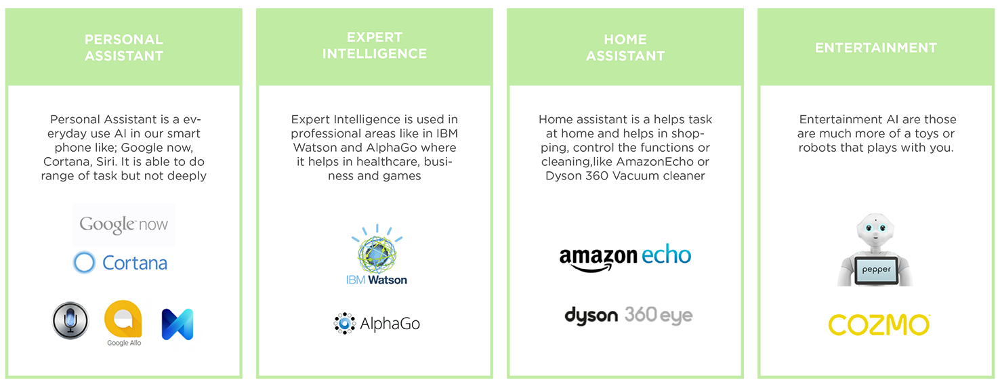
The growth of AIAs of June 2016, artificial intelligence received $974m of funding. This year’s funding is set to surpass 2015’s total and CB Insights suggests that 200 AI-focused companies have raised nearly $1.5 billion in equity funding.
The barrier of AIDespite the increases AI market it seems like not many people are not using the AI or satisfy of what the AI is providing. From our interview we found that most people only use alarm clock or asking for weather and calls. They do not seems to use any other feature despite it can do more.
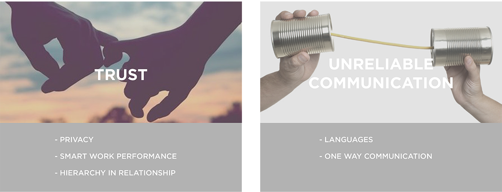
The surprised momentDuring our interviews and observing user’s daily routine we found, people meets different kinds of surprises and sometimes, they cause diffculties and problems. And a lot of people find it is diffcult to cope with negative experiences, where we think that it is an opportunity for AI to help.
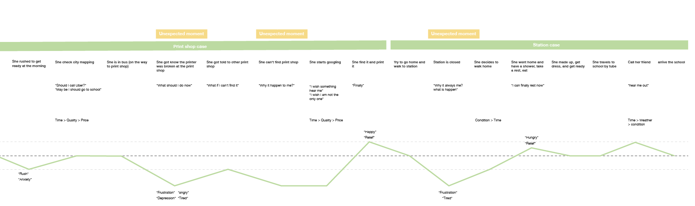
WorkshopIn order to further understand people are in this kind of situations we decided to do workshop and interview and how do they behaviour and feel in this situations.
 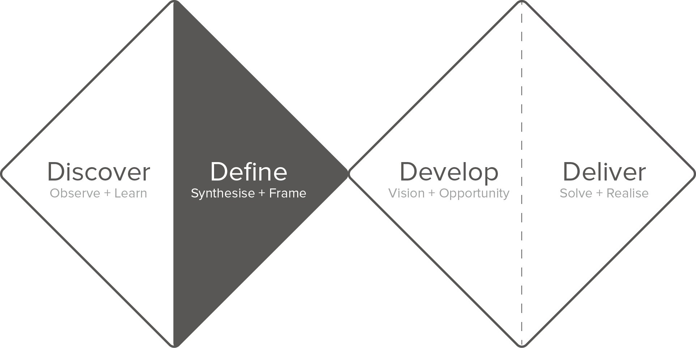
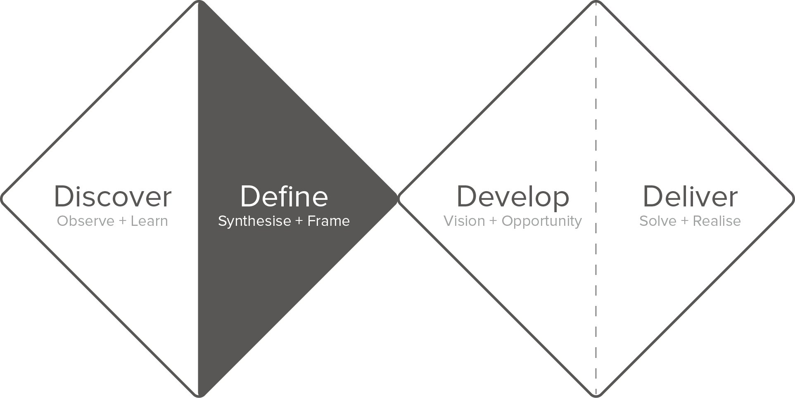
InsightsWe have found 3 main insight during the workshop. First people have di erent sets of value, whether that is towards work or relationship. Second because of this value, people have different needs. Lastly there are 4 elements people also judge when a situations happened.
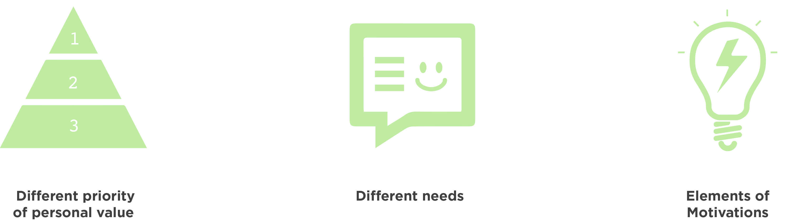
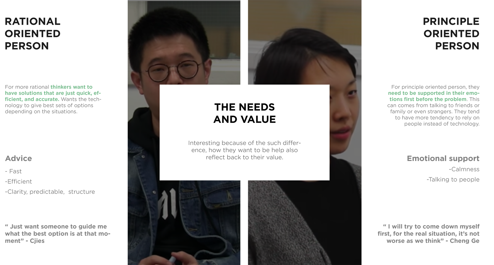
4 Elements of MotivationsThere are 4 elements people always think about when judging a situations. That is “capability of solving the problem”, “Effects on life cycle”, “Impact on relationships”, and “Impact on resources”

IdeationAccording to all the insights, we started to design the AI system and storyboard, as well as the new device.

“Mara” is a personal voice assistant that are able to preventing unexpected situations, provide quick advice and give you emotional support. Mara is able do this by understanding the user, not only through big data, but also your emotions, personality and your value. This will make Mara empathise the users and truly give you the best support.
How does it work?MARA is divided mainly between Quick advice and Emotional support. It will extract informations not only from your data, but also emotions, personality, person value and etc. To provide the way it quick advice and support. This could be the word ,tone, or the order of how AI interact with the users.

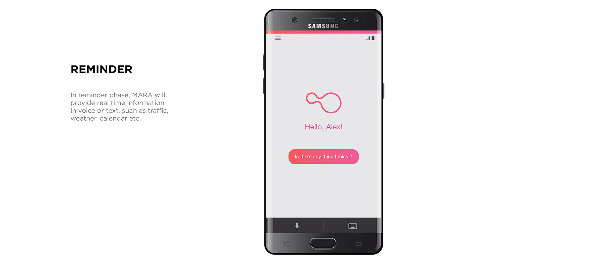 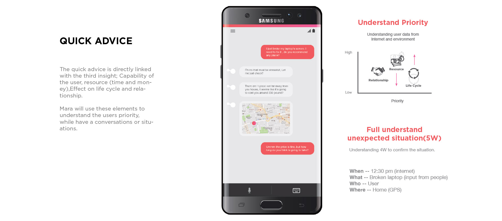
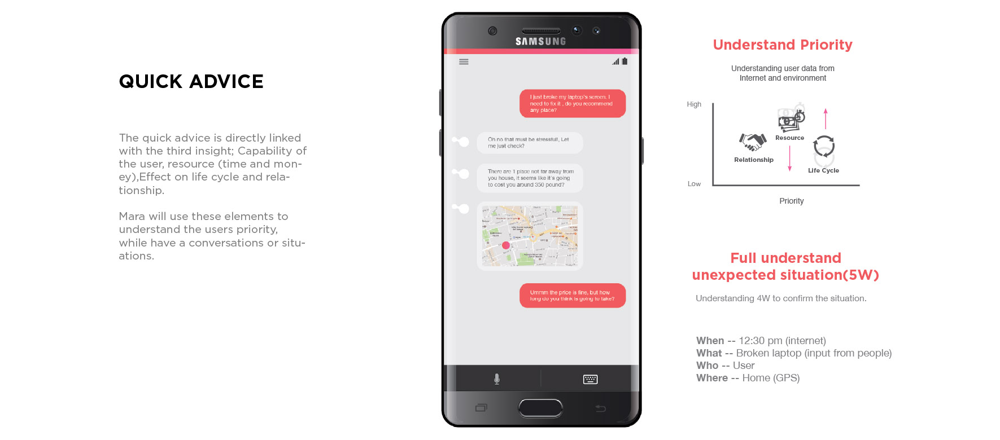
Architecture of MARA
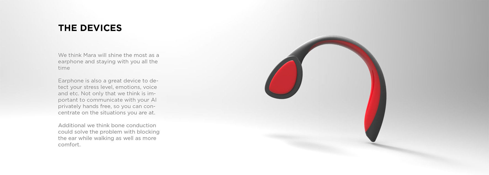
Video------------
Partner: Samsung
Date: Sep 2016 - Dec 2016, London, United Kingdom
In team with: Sean Koo

BRIEF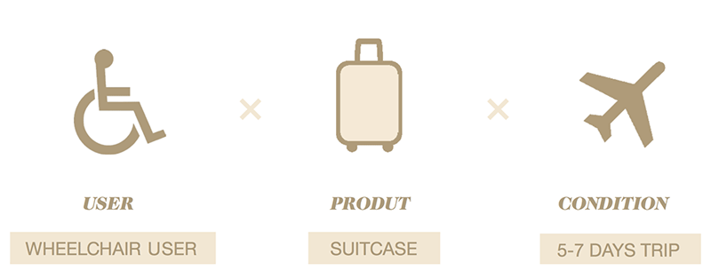“Take It Easy” is a suitcase designed for wheelchair users. It solves the problems of inconvenient use and psychological pressure of wheelchair users with suitcases on the market, enabling wheelchair users to pack their luggage on their own, without assistances of other people.
THE DESIGN PROCESS
Research & Interview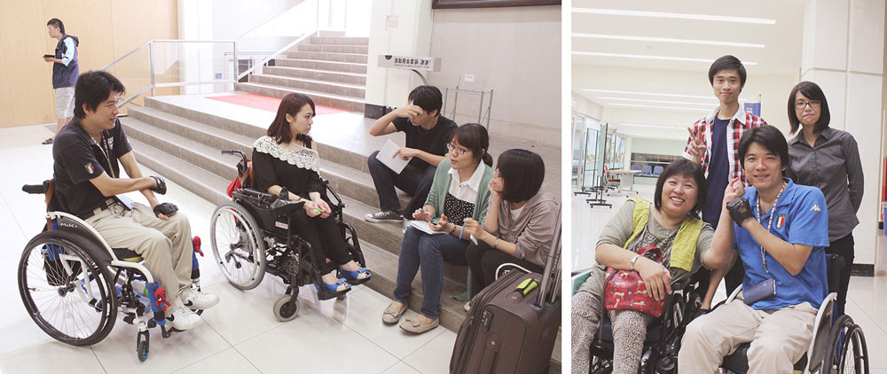We have done a lot of interview with wheelchair users. From the interview, we noticed that wheelchair users met some problems with current suitcases while packing up their luggage. They couldn’t use the current suitcases without other people’s help, therefore they can not barely travel by themselves.

As a summary of target's users' journey based on a great deal of interview, we simply mapped out the touchpoint in each step.

Furthermore, we have done the User Experience Journey Map
Intergrate in 7 Problems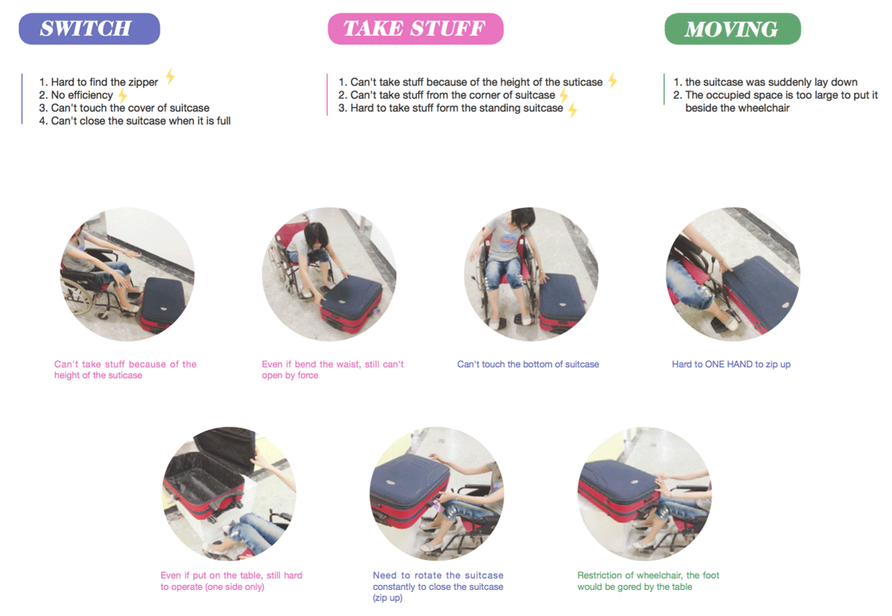
Summarise in 2 Key Problems
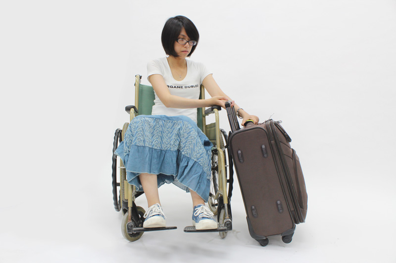"WEIGHT"
A suitcase filled with luggage is too heavy for them to take down from the table. They need to asked for help. Moreover, if the suitcase lled wtih stuff, they certainly can not put on the table as well.

"HEIGHT"
Current suitcases should be lay flat while using. However, a wheelchair user can’t reach the suitcases for the limit of their hands. The suitcase should be placed on a small table by other people for them to pack up luggage.
Brainstorming and Sketch
Depending on two main problems, we started to brainstorm the solution via variety of Design Method, for example: Morpholoical Charts.
Marketing Research
Having done a lot of research of suitcases, compared with the material, price and the size. It would be helpful for designing the sharp and the function when we sketch.
Sketch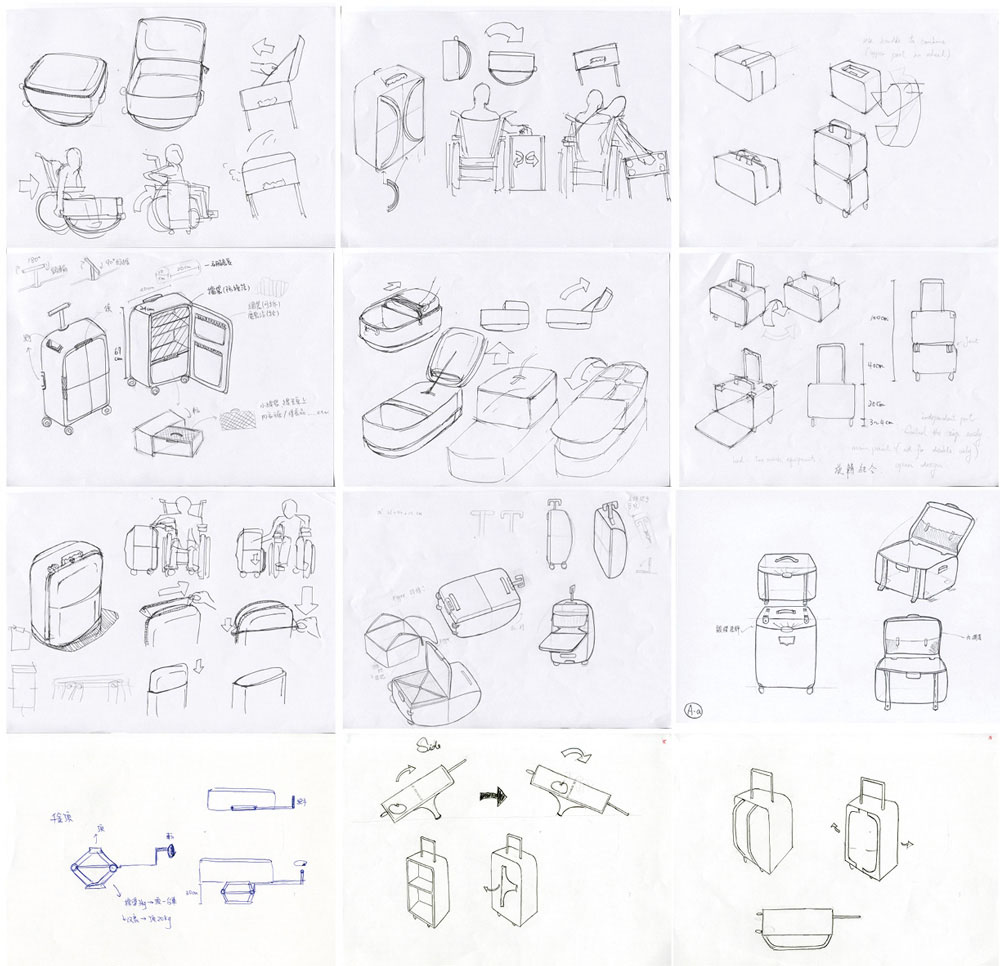According to our key problems, we had sketched over hundards of paper and we tried to make the wheelchair users operated our suitcase as easy as normal. Meanwhile, we have made lots of prototypes to test our ideas.
Take It EasyModern people like to enjoy lives through traveling, however, a normal activity like travel would be luxury to people using wheelchairs. They will meet barriers not only in the environment, but also their psychological conditions. They would feel bad when always asking other people for help since they don’t want to become a burden to them.
From the basis of “ design for wheelchair traveling”, we searched for the touch point of design. We hope that through our design, wheelchair users can travel with carefree and satisfaction independently. Last but not the least, we’d like to expand our design to universal design. We hope our design can be benefit not only for the wheelchair users but also old people or people who move with difficulty. We believe that not only the environment, but also products should be accessible to everyone.
New Scenario Video
Main Features
1. DETACHABLE DESIGN
The whole design is a combination of two detachable cases. Users can pack up their luggage of commonly use on upper case for special condition without open the whole suitcase. The detachable design also benefits users with flexible size depending on their days of traveling.

The switch design on the upper case can detach the combination, but it can hardly move without applying a force for safety consideration and accident. Moreover, there is a touch-avoiding design for additional protection.

2. UPRIGHT LID DESIGN
The innovative design of upright lid enables users to use the suitcase without moving it, solving the ergonomic problem of height and weight. Wheelchair users can easily use the suitcase by themselves with one hand beside the wheelchair.

3. INNER BAGS PACKING
The interior design of suitcase combines with inner bags, helping users distribute the weight of luggage and reach the object in the bottom. The design solves the height and weight limit problems of wheelchair users. The inner bags are designed with reaching rope connected to the lid of lower case, user can easily use with one hand.


Inner bags design is based on the using habits of our targeted user, female wheelchair users. Inner bags help users to distribute the luggage weight and assorting the luggage while packing.
New Scenario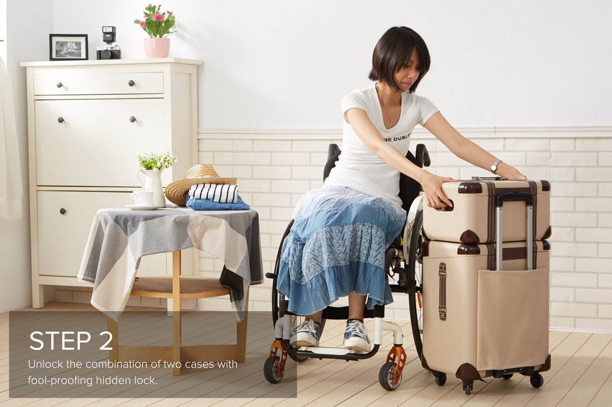

Drop Avoiding Bag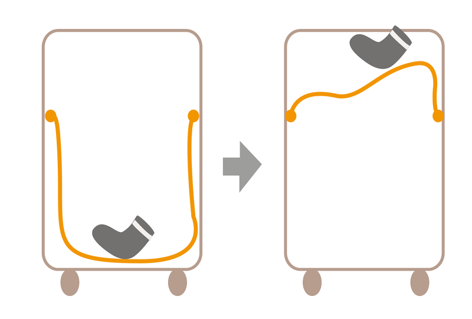Drop-avoiding bag is a design in the edge of lower case, preventing the object from falling into the bottom but hard to take. When the user can hardly bend down to take the falling object, they can pull the edge of the drop-avoiding bag that they can reach them.

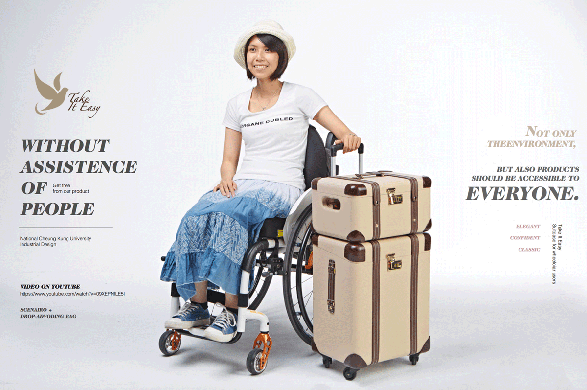------------
Date: Sep 2013 - May 2014, Tainan, Taiwan
In team with: Hsin Yi Lo, Hsi Chen, Wen Hui Huang
 BRIEF
BRIEFIn the market, there are few products which are considered to be designed for single and multi-users. We have to consider all users are how to communicate and how to deliver the detailed message to other users.
THE TOPIC I CHOOSE
When you are alone, then you want to take a photo of yourself. You need help from others. If the helper is a beginner, it is hard to explain what you want. For instance, the angle of taking photo, proportion and the distance. General digital camera did not come up with good solution within this situation. So I decided to dig into this problem.

THE DESIGN PROCESS
Research & InterviewFirst of all, I interview a lot of target users and write down all the pain points. We are able to separate into two main categories: Problems for Single Users and Multi-Users.


Print out all the issues in a paper and cut it in a small pieces so as to intergrate them.
Eventually, giving a title to different groups and analyise them.
Summerise Key Insights
According to the issues, I classify issues under 8 topics and find out the key insights from all of the topics, therefore, I got the interesting opportunity for this project:
"A do not know how to tell B what the photo style he wants"

Sketch and Design
From all of the issues, finally I decided my topic that is to separate the "Preview screen" and "Camera lens". It is because it is the most directly way to preview accuratly than communicate to the helper even if the helper is a beginner. if you can preview it, the photo would be what you want.
Diversified Cam

The way to solve problem is to separate the “preview screen” and “camera lens”. The advantage of this design is you can preview all the details by yourself accurately. Merely Requesting the helper oriented the camera lens to you.


------------
Date: Sep 2012 - Jan 2013, Tainan, Taiwan
In team with: Individual
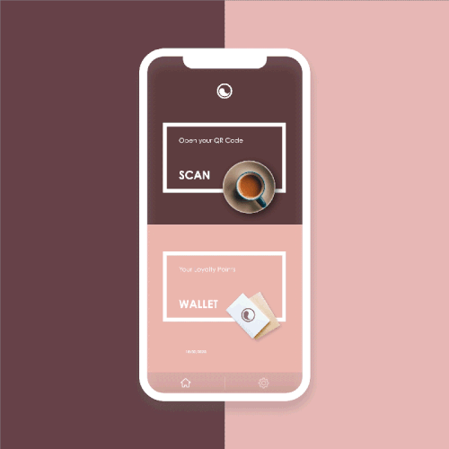
 CONCEPT
CONCEPTWorth+ is an initiative at ICAEW that explores new ways of assigning value to actions and policies in business practices that help meet the Sustainable Development Goals.
Then and Now
New Business Landscape
------------
Partner: ICAEW (Institute of Chartered Accountants in England and Wales)
Date: Apr 2016 - Jane 2016, London, United Kingdom
In team with: Amit Kalra
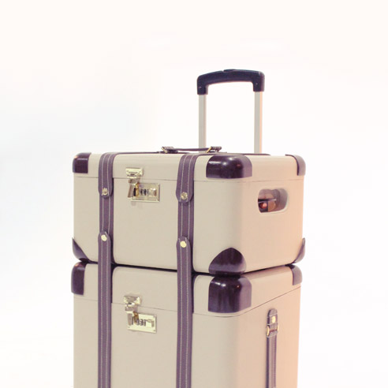

This project is awarded with THIPP Vanguard Staff Innovation Fund (£25,000) from Tower Hamlets Integrated Provider Partnership to run a pilot scheme in William Davis primary school and Blithehale Medical Centre.
BACKGROUND
The multi-culturally diverse and relatively poor borough of Tower Hamlets faces different challenges. The practice has little means to deal with the root causes of the increase in people's demand. The health center is therefore looking for a new way of transfering knowledge utilising it's resource with the community.
THE DESIGN PROCESS
Research & Interview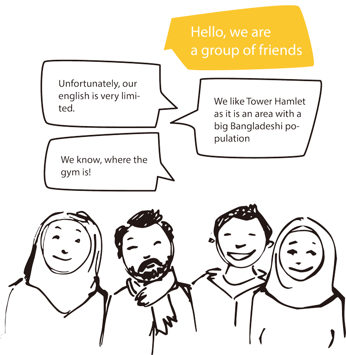Research in different aspect via reserach and interview :
demographic, local media, people's relationship etc.
Establishing User Experience Journey Map based on lots of interviews, it helps us to make a clear mindset on each step and discover the insights.
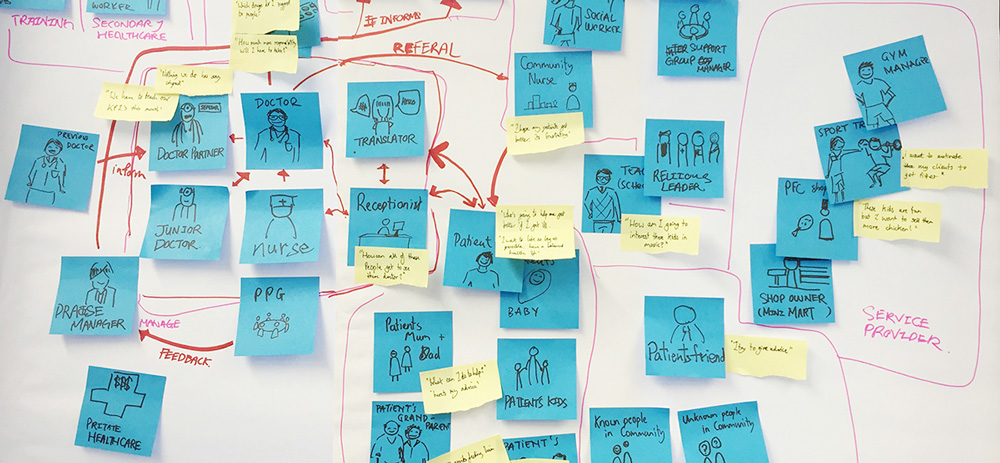Stakeholder map for understanding the relationship in Tower Hamlets
Summerise Key Insights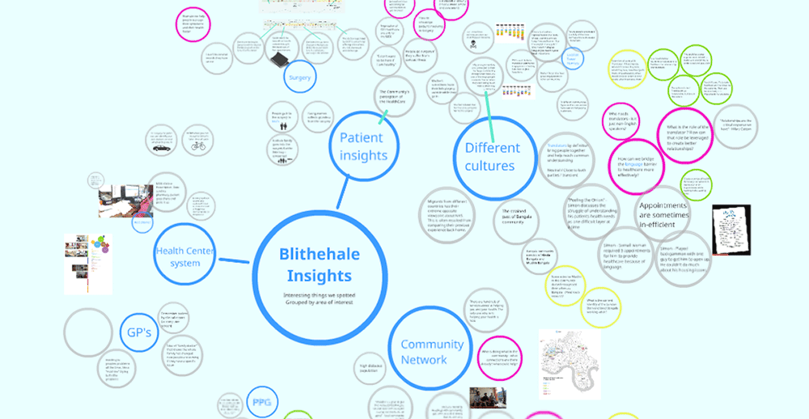We combinated all of the insights from our different research to make a big picture, e.g. stakerholder map, user journey map, interview etc. Eventually, we concluded them as our inital problem.
Key Problems Opportunity
OpportunityHow might we transfer health knowledge from Blithehale Health Center to the community in Tower Hamlet utilising it's resource?
IdeationGenerate different ideas via variety of design method and discussion


Health Cadet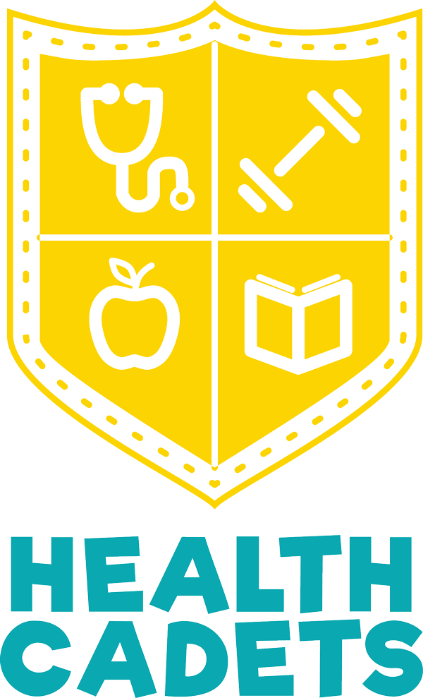
ConceptHealth Cadets builds on the idea of the existing after school club. With the ultimate goal of keeping people healthier and reducing demand for care, it aims to be more strategic about what it teaches and how those learnings can be transferred back to the community.
By teaching on local health issues with tools to make the learning outcomes of each lesson highly visible, the after school club can become an effective health promotion tool in the community.

This diagram is to show how the information flow among the community
ToolBox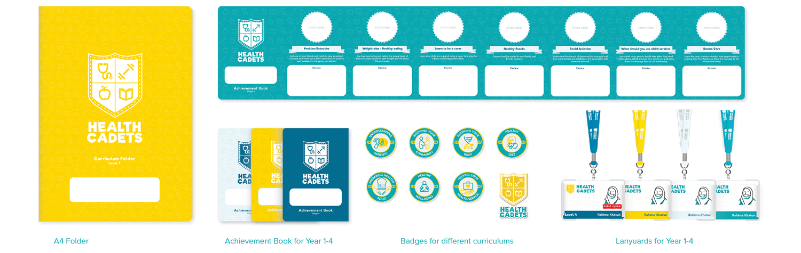Within the toolkit there is everything the practice needs to teach children: ID badges for kids, Achievement books, work folders, lesson plans and certificates. It is also creating more meaningful feedback from kids and community.
Storyboard
Prototype & Exhibition
------------
Partner: Blithehale Health Centre
Date: Sep 2015 - Dec 2015, Tainan, Taiwan
In team with: John Makepeace, Anna Schoen, Jia Xiang Chua
------------
The project is still on going, keep updating
 BRIEF
BRIEFI have participated in Mind the Gap exhibition in London Design Festival 2013. Mind the Gap looks at the challenges facing modern urban transportation hubs and the design strategies used to respond to them. This collaborative project between two groups of design students – RCA Design Products' Platform 17 and the National Cheng Kung University in Tainan, Taiwan – focused on London’s Marylebone and Tainan train stations.
 INTRODUCTION
INTRODUCTION
KeyFrame–Tainan is an interactive device designed by Long-Kei Fong, Yuan-Chi Tseng and Yu-Chiao Wang that combines culture, digital arts, local music and technology to bring the viewer into Tainan life. Designers mix the style of picture book, watercolor brushes and other visual effects to create a digital scroll representing the urban image of Tainan.
The horizontal scroll captures the local culture, friendly and laid-back residents and the landscape of the ancient capital of Taiwan, Tainan. The viewer is an urban wanderer who can even jump from real world into the virtual urban daily life by the Kinect technology. S/he can follow her/himself and others to explore the illustrated city step by step.
HOW TO PLAY
 DEMO VIDEO
DEMO VIDEO------------
Partner: Royal College of Art Product Design Platform 17
Date: Apr 2013 - Sep 2013, Tainan, Taiwan
In team with: Yuan Chi Tseng, Yu Chiao Wang
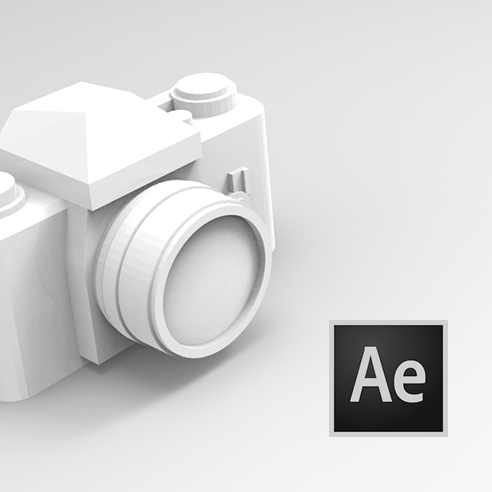
CONCEPT
This is a CIS Design (Corporate Identity System) comprising logo, leaflet, CD etc. Regarding cruise as the name, the direction of this design mainly combine the name (APOSTLE) and the implication of cruise.

I use JESUS FISH as the repersentative of Christian, our cruise would be safe under the protection.Then, the tail of the sh represent the bow of the cruise (perspective), the logo with blue color and smooth curve show that it concerns about the nevigation.
JESUS FISHIt is a sign of representative of Christian. In bible, there is a story - "Jesus Feeds the Five Thousand".Therefore, christian is likely to metaphor themselves as a fish which is safely and freely under the Jesus's take care.

Logo Name Card
Name Card
CD
Envelope
DM
------------
Date: Sep 2012 - Jan 2013, Tainan, Taiwan
In team with: Individual
WORKS
Wood Chair 2010 / Markers, color pencils, chalks, advertising paint, burin, tape

Wood Chair 2010 / Markers, color pencils, chalks, advertising paint, burin, tape

Metal Camera 2011 / Markers, color pencils, chalks, advertising paint

Glass Swan 2011 / Markers, color pencils, chalks, advertising paint, burin, tape

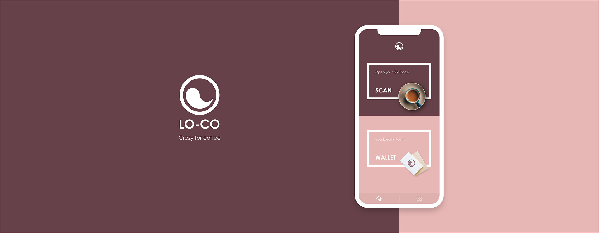BRIEFThis Project isn in the third year of industrial design, we have to detach one of the structured product, detached it, learn from it, then redesign that product with our creativity.
DETACH AND LEARN
I choose hifi as my topic. Understanding the structure of the product in the market is one of the most process before we start to redesign it.
IDEA

Depending on the research and interview, I know that my target users are likely to enjoy thier music at home everywhere and they want to have a good connection between their mobile phone and their hifi. The shape of vinyl player is based on vintage-trend, moreover, target users feel more professional due to the behavior change of using vinyl player.
INTRODUCTION
FUNCTION
Using your phone to control the HiFi

Wireless Charging
Putting your products on the circle-wireless charging board. You can play the music form the mobile phone when it is charging.

Music Switch
This is the switch of the HIFI player. If you put the pole on the charging board, then the HIFI will be turn on.

Remove Control
The remote control is a part of the HIFI, but you can still use your phone as a remote control. Separated it when you are charging your phone on the board.
Modeling

------------
Date: Sep 2012 - Jan 2013, Tainan, Taiwan
In team with: Individual
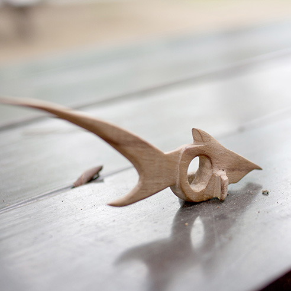
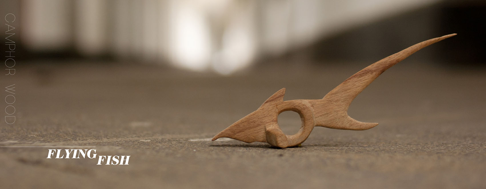CONCEPT
Mix the tail of flying fish with the blade of letter opener. The purpose is to reinforce the aesthetic shape and make users are able to use intuitively.
Camphor is the wood for making letter opener
Flying Fish
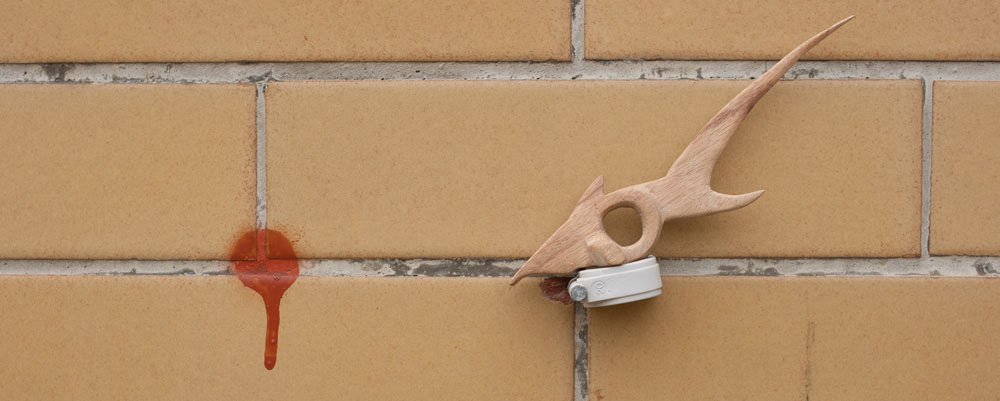
------------
Date: May 2011 , Tainan, Taiwan
In team with: Individual

 CHALLENGE
CHALLENGEGetting a house, setting up a bank account, finding a phone and wi-fi. It’s a huge headache when you come to a new city.
CONCEPT
Information FlowWe offer our services to universities that sign up with a one-off joining fee.
Their students are offered the opportunity to register with Smooth Start online when they receive conformation of their place. If they choose to sign up, the university simply passes the student information to Smooth Start.
Smooth Start gives this information directly to its partners: the accommodation company, the bank and the telephone provider, who set up temporary accommodation, a bank account, and a mobile phone for the student, depending on their needs. The service providers feed the students’ new bank account details, address and telephone number back to Smooth Start and welcome their new international customer to their service.
Values for stakderholdersBy using Smooth Start, students, who have already established a relationship of trust with their university, will feel like their university is working together with them to give them the best possible experience of arriving in a new country.
By using Smooth Start, the universities will be able to provide a valuable and surprisingly easy experience for students, whilst reducing their workload at the beginning of the term.
By partnering with Smooth Start, the banks, housing companies and phone network providers will have access to a sizeable and lucrative market share whilst also reducing their administrative burden in processing and checking documents.
RBS High Street Ken branch gave us insight into the fact that banks don’t see the value in international students because they take a lot of staff time, have diffculties with communication and don’t always come prepared - a service like Smooth Start would reduce in-branch time and prepare the students better for their new start. Smooth Start can share these details back to the other service providers and the university.
The university can now better keep their information up-to-date. By grouping all the university’s students together through Smooth Start, we’re also increasing our buying power, and getting the best deals for the students on these essential services.
------------
Date: Sep 2015 - Sep 2015, London, United Kingdom
In team with: Daria Kwiatkowska, Daniel Lee, Monica Chen
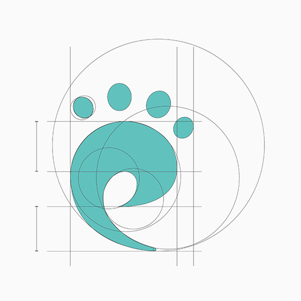
2D motion graphicSmooth Start / 2015Worth+ / 2016CYKED / 20163D AnimationRUN and GUN / 20132D AnimationPui Ching Middle School Promoting Video / 2012
Interview Video Opening / 2012Video - Take It Easy / 2014/ about me
Introduction to my life and academic background
Showing my former partners I have worked with
ROCKY FONG
( Long-Kei Fong )
Service Designer / Product & Graphic Designer
I am a multidisciplinary designer specialised in service design, user experience and graphic design, with a background of product design. While being expert in converting observation to insightful opportunity by capturing people’s needs and deep motivations, I am also capability of visualising abstract conceptual patterns into logical information graphic, ecosystem mapping and motion graphic animation, which is benefited me to come up with contextual solutions creatively and accurately, as well as take advantage to communicate with stakeholders in an engaging way.
Having studied in Macau China, Taiwan and United Kingdom, I have a strong sense of multicultural communication, which equipped me flexible, social and sensitive skills that enhances my working relationship with culture difference. I also have a wide range of interests such as different sports and music, additionally I am a pianist and have learned piano for over 15 years (Royal College of Music Grade 8 Certification, ABRSM).
( I am a Portuguese and Macao passport holder )-
2016
- Master: Royal College of Art, London England, Department of Service Design, UK
- Freelance: Service designer in Startups
-
2015
- Master: Royal College of Art, London England, Department of Service Design, UK
- Freelance: Graphic and Video effect, Macau
-
2014
- National Cheng Kung University, Tainan, Taiwan, Department of Industrial Design
- Graphic Designer: Worked for Conde Group, Macau
-
2013
- London Design Festival 2013 Mind The Gap Exhibition, London
- Freelance: Video Effect for Ministry of Science and Technology, Tainan
-
2012
- Internship: M-plus interior design, Macau
-
2010
- Highschool: Pui Ching Middle School, Macau China
- Governments volunteer team for 8 years since 2005
-

Macau
Highschool
Pui Ching Middle School
SCIENCE
2004-2010
-
Taiwan
University
National Cheng Kung University
INDUSTRIAL DESIGN
2010-2014
-
United Kingdom
Master
Royal College of Art
SERVICE DESIGN
2015-2017
experience
I have worked WITH, FOR, or AT...
 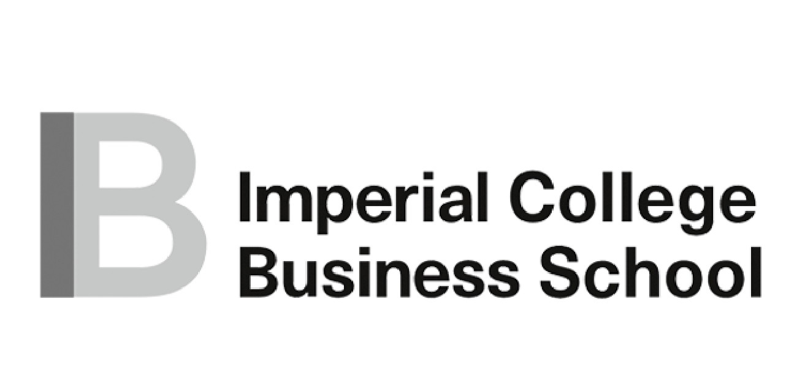
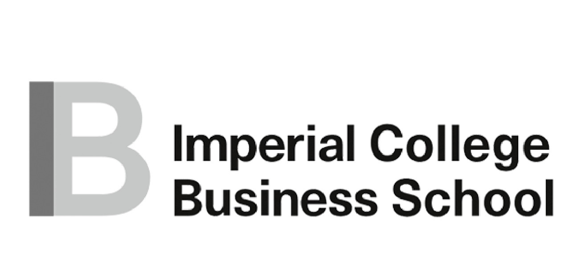

 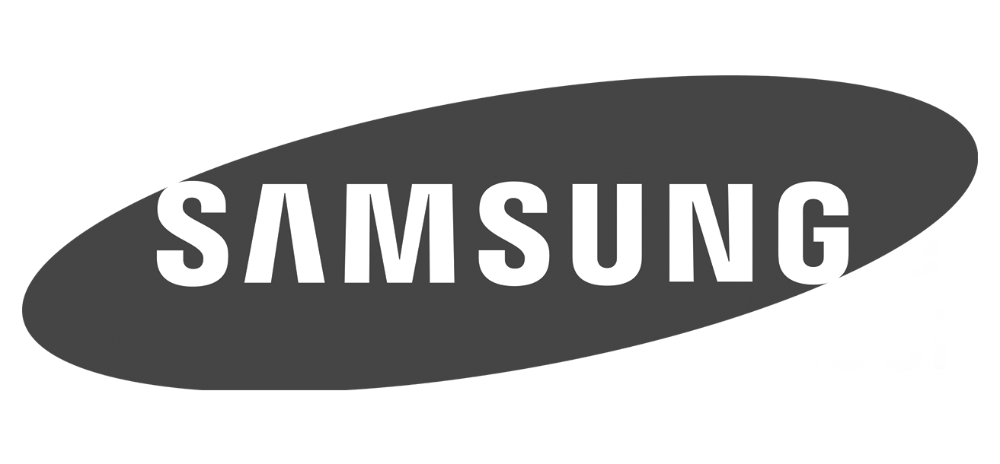
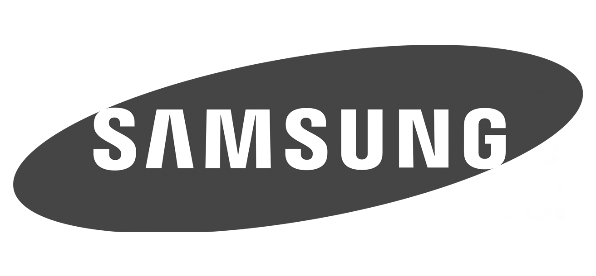
/ Design Process
what tools I might use and how I think
How service designers workHow I work
How service designers work and what tools we might use

1. DISCOVER
Can be used to explore the problem area, focus on an specific issue or crowdsource insights about a particular topic.
2. DEFINE
Can be used to validate problem definitions and test the assumptions underlaying those definitions
3. DEVELOP
Can be used to co-create ideas, validate design hypothesis and build prototypes. Here is suggested to conduct separate workshops
4. DELIVER
Can be used to validate and test prototypes
/ contact
I always look for new opportunities and people to talk to
Feel free to get in touch with meget in touch
I am currently looking for internship and design jobs, as well as opportunity collaboration
Your message has been sent. Thank you!
Sorry your message can not be sent.